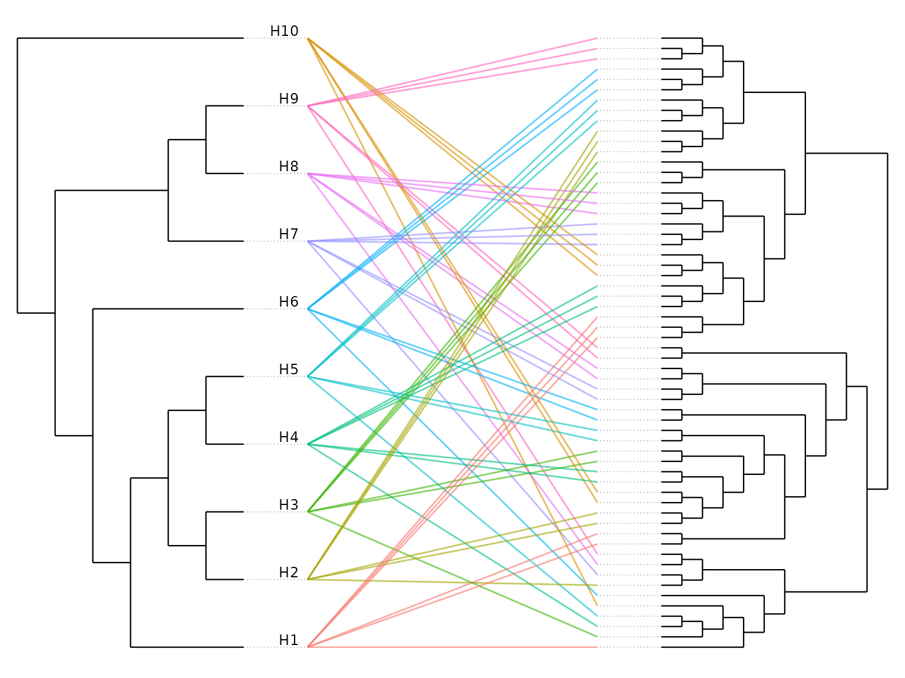

Beyond the main scan, codiv provides functions for
probing robustness, dating co-diversification events, and visualizing
host–symbiont congruence. All build on a codiv() result, so
they share its inputs and conventions.
library(codiv)
sim <- simulate_codiv_data(n_hosts = 10, n_clades = 3, seed = 1)Which hosts drive the signal? Leave-one-host-out
loo_host_analysis() reruns the scan with each host
removed in turn and reports how much each host changes the number of
significant nodes — a large impact_score means the host
contributes disproportionately to the signal.
loo <- loo_host_analysis(sim$host_tree, sim$symbiont_tree, sim$links,
permutations = 99, methods = "hommola", verbose = FALSE)
loo$host_importance
#> host n_nodes hommola_n_sig hommola_delta_n_sig hommola_mean_stat
#> 1 H10 3 1 1 0.54966193
#> 2 H1 3 0 0 0.04105333
#> 3 H4 3 0 0 -0.05157533
#> 4 H5 4 0 0 -0.35467909
#> 5 H6 5 0 0 -0.03759277
#> 6 H7 5 0 0 -0.12729746
#> 7 H9 5 0 0 -0.03759274
#> 8 H8 5 0 0 -0.12729746
#> 9 H2 4 0 0 -0.40858650
#> 10 H3 4 0 0 -0.14747430
#> impact_score
#> 1 1
#> 2 0
#> 3 0
#> 4 0
#> 5 0
#> 6 0
#> 7 0
#> 8 0
#> 9 0
#> 10 0How sensitive are the results? Parameter sweeps
sensitivity_analysis() reruns the scan across a grid of
span_fraction and min_symbiont_tips values so
you can see whether findings are stable or threshold-dependent.
sens <- sensitivity_analysis(sim$host_tree, sim$symbiont_tree, sim$links,
span_fraction_range = c(0.3, 0.6),
min_symbiont_tips_range = c(7, 10),
permutations = 99, methods = "hommola",
verbose = FALSE)
sens$sensitivity_data
#> span_fraction min_symbiont_tips n_nodes hommola_n_sig hommola_mean_stat
#> 1 0.3 7 10 0 -0.05226943
#> 2 0.6 7 12 0 -0.03900951
#> 3 0.3 10 8 0 0.01857405
#> 4 0.6 10 10 0 0.02031726Dating co-diversification: the molecular clock
For strongly co-diversifying clades, molecular_clock()
regresses symbiont divergence against host clade age. A positive slope
corroborates that symbiont clades diversified alongside their hosts, and
the slope estimates the symbiont molecular rate (following Sanders et
al. 2023).
clock_sim <- simulate_codiv_data(n_hosts = 14, clades = list(
list(codiversifying = TRUE, congruence = 1, n_per_host = 3)), seed = 1)
codiv_results <- codiv(clock_sim$host_tree, clock_sim$symbiont_tree,
clock_sim$links, span_fraction = 0.9, methods = "hommola",
permutations = 199, verbose = FALSE)
# the simulated host tree is ultrametric, so it stands in for a time-calibrated tree
mc <- molecular_clock(codiv_results, clock_sim$host_tree, stat_threshold = 0.75)
mc$slope
#> [1] 1.010627
mc$r_squared
#> [1] 0.999948
head(mc$per_clade)
#> Node_ID n_hosts host_age symbiont_divergence
#> 1 Node_29 5 0.1622165 0.1642994
#> 2 Node_4 6 0.4981807 0.5164868
#> 3 Node_3 9 0.7521906 0.7612640
#> 4 Node_2 14 1.9897942 2.0152759Visualizing congruence: tanglegrams
plot_codiv_trees() draws the host and symbiont trees
face to face with a line for each association — an intuitive read on how
congruent they are. It returns a ggplot object you can
style or save with ggsave().
plot_codiv_trees(sim$host_tree, sim$symbiont_tree, sim$links)
By default a cladogram layout is used and the symbiont tree is
rotated to reduce line crossings; set
use_branch_lengths = TRUE to position nodes by branch
length, or pass a codiv_results object with
color_by = "significance" to highlight symbionts in
significant clades.